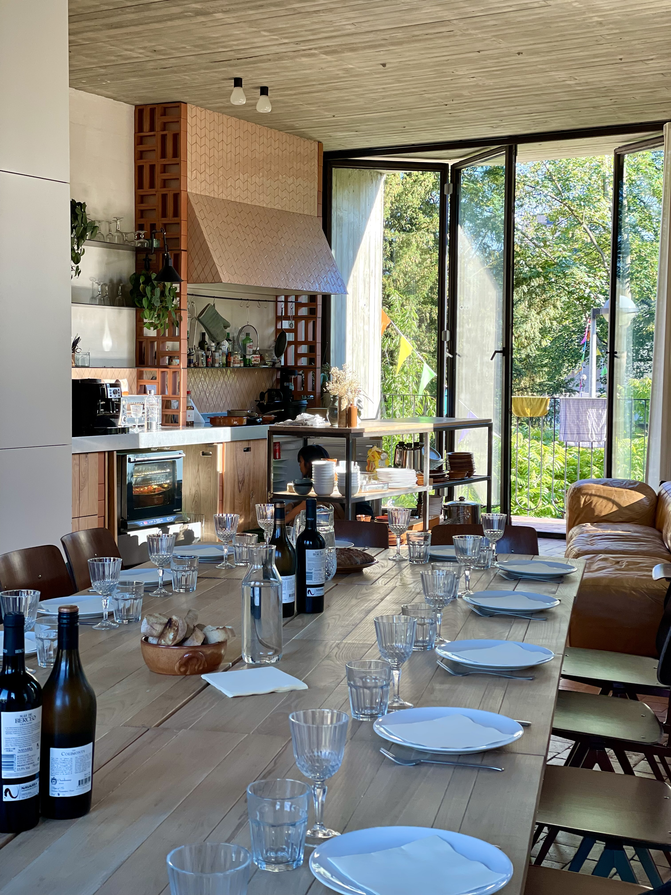
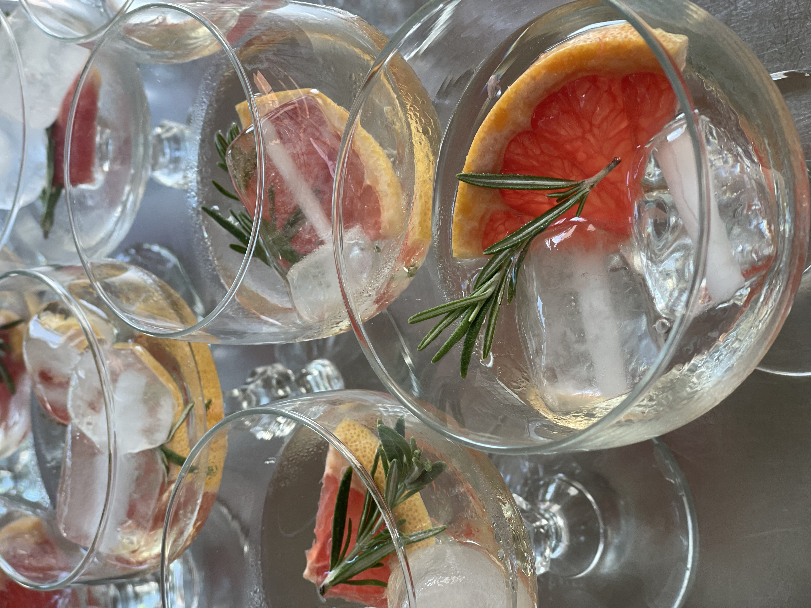
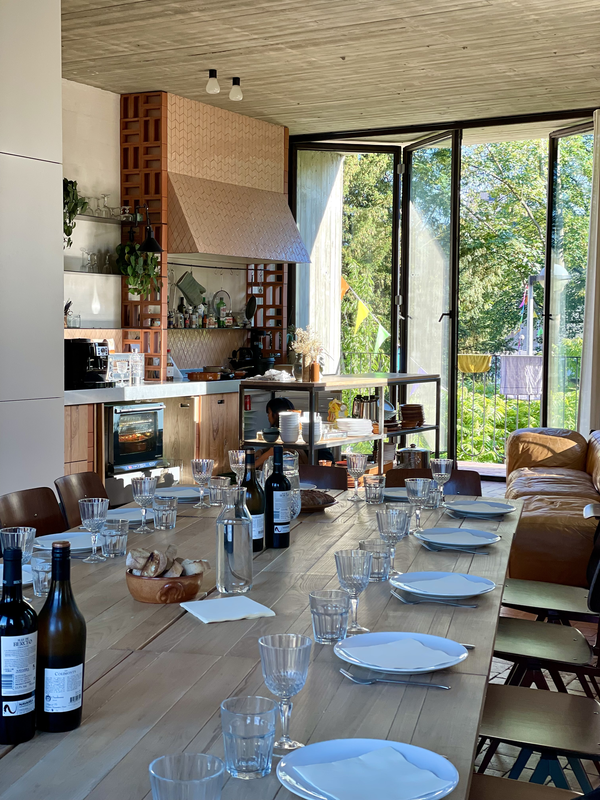
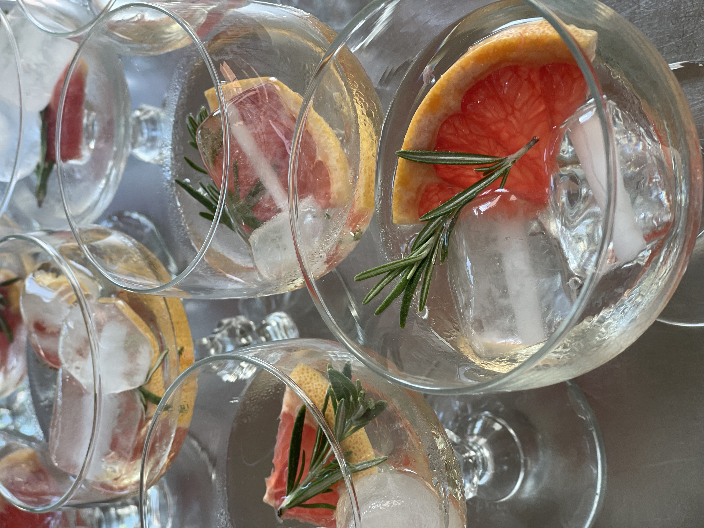
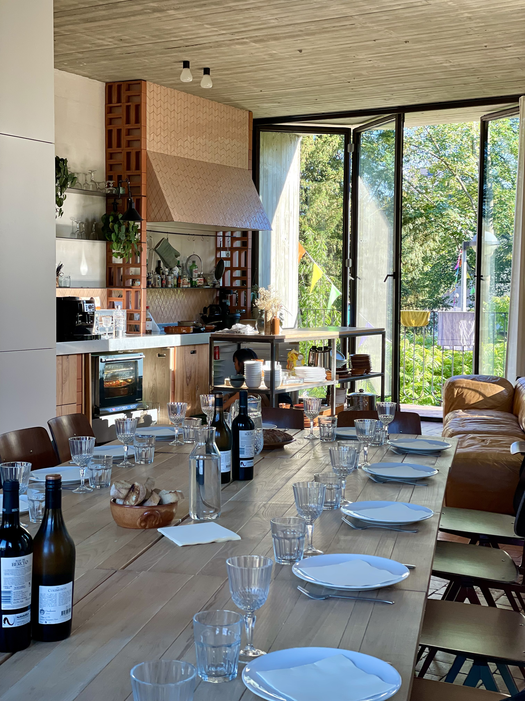
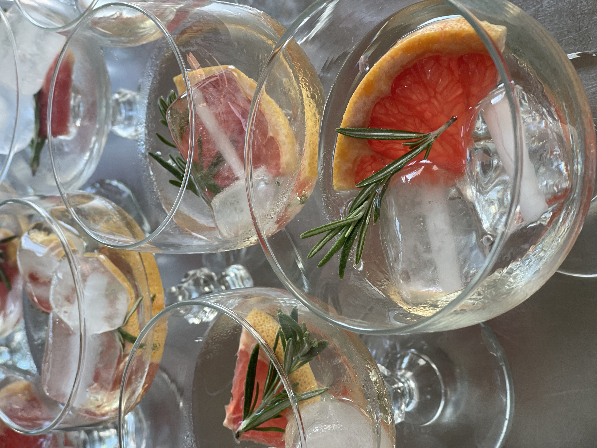

Kruul is geen klassieke eventlocatie. Het is een plek die groeit met ideeën, waar brunchweekend naast netwerkavonden bestonden, waar tekenschool en foodconcepten samenklonken. Ik bouwde deze locatie uit van branding tot boekingsflow, van zomer popup bar tot zakelijke bijeenkomsten.
Naast de inhoudelijke programmatie bouwde ik ook de infrastructuur: een heldere website, plug-ins om timeslots te reserveren, een shop voor ticketverkoop – tools die het organiseren lichter maakten zodat de ervaring centraal kon staan.
Tegelijk stond ik in voor de praktische werking van Kruul: ik beheerde de cijfers, volgde de boekhouding op en stroomlijnde de communicatie met klanten.
Kruul leerde me wat het betekent om een ruimte echt te laten werken: technisch, esthetisch én menselijk. En hoe je, al doende, een bedrijf bouwt.

